|
collection |
ペコちゃん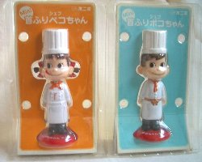 ミニペコちゃん・ポコちゃん首振り人形 シェフ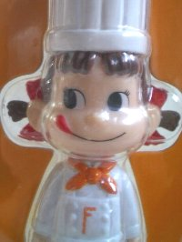 不二家のおもちゃの福袋のようなものに入っていました。 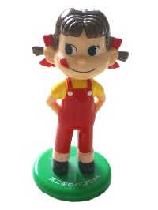 ミニ首振りペコちゃん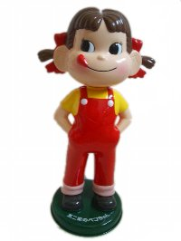 平成ペコちゃん首振り人形 約30㎝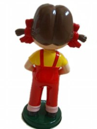 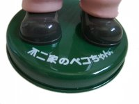 後姿と台の部分。 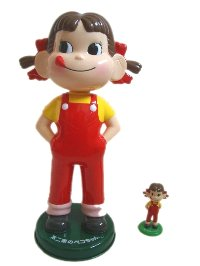 ミニペコちゃん首振り人形、ペコちゃん首振り人形を 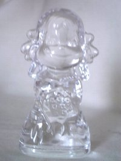 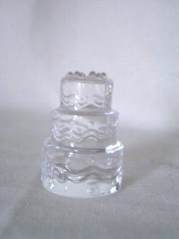 クリスタルペコちゃん ウェディングドレスとウェディングケーキペコちゃんbook 『Peko Book』 講談社 2007
オールカラーの193p。ペコちゃんが誕生した当時から現在まで 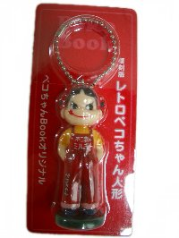 おまけのレトロペコちゃん人形キーホルダー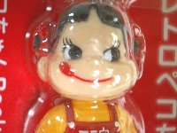 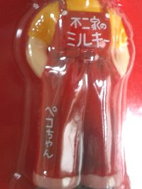 古いペコちゃんのよい雰囲気がでています。 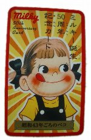 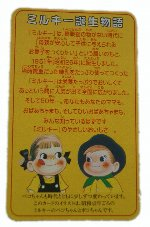 ミルキー 50周年記念カード
復刻版のミルキーについていた50周年記念カード。昭和43年ごろのペコちゃんだそうです。 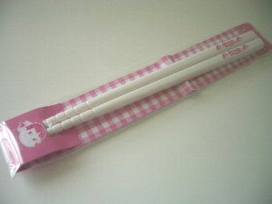 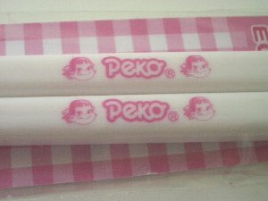 サークルKサンクス限定ペコちゃんecoマイ箸（2008）サークルKにて発見。 2008  なないろまーぶる なないろまーぶる
当サイトの画像および文章の無断転載はお断りいたします。 |